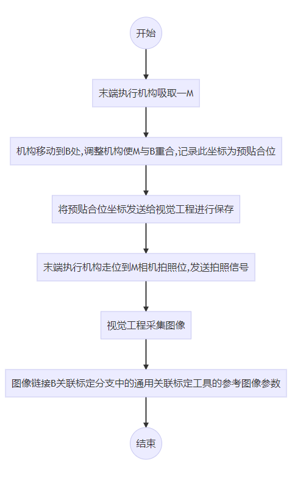

本项目主要实现机构吸取M后，引导其对位贴合到B的功能。
根据项目需求设计硬件机构如下图所示，一个M相机垂直向上拍摄，一个B相机垂直向下拍摄，两个相机在机构运动停止状态下拍摄，即运动停稳后，两个相机同时拍摄，固定间距。M运动平台和上相机共用一个Y轴，M吸头是标准的XYθ轴平台。
在实际视觉引导中需要先对M相机、B相机与对位结构进行标定，确定各相机坐标系与平台坐标系（即末端执行结构坐标系）之间的转换关系，本项目中根据各相机拍照情况，对M采用十二步标定法，B相机采用Y轴三步走位标定+单点中心关联标定；然后根据标定结果通过多点对位方式对两个工件进行对位贴合。
由于标定原理及对位原理具有通用性，早已验证。针对每个项目，需要根据其实际情况选取其标定特征点与对位特征点。本项目中M及其B近似为矩形，具有对称性，所以选取其几何中心作为标定特征点与对位点，效果如下图所示：

所谓对位实际是通过相机拍摄对位目标，获取对位点在各自相机坐标系下坐标值，然后通过一定关系转换到平台坐标系下，在平台坐标系下计算相应机构走位坐标，完成对位。标定的作用即在获取坐标系间转换关系。其关系如下所示：
其中(x,y)为平台坐标系下坐标，(u,v)为相机坐标系下坐标，α为坐标系间缩放比例，θ为坐标系间旋转角度，(Tx,Ty)为坐标系间原点间距。以上均为二维坐标系间转换关系。所谓标定即是确定α、θ以及(Tx,Ty)的值。
以XYD平台类型机构为例，机构运动标定的基本原理是，机构带着产品按照如下图所示的路径运动，相机对产品上的标记点拍照，将机构的运动坐标和相机的图像坐标带入转换关系计算，建立图像坐标系和平台坐标系间的映射关系。
走位位置从图像上看顺序为：初始位置(0)、右(1)，右下(2)，下(3)、左下(4)、左(5)、左上(6)、上(7)、右上(8)、初始位置(0)、顺时针(9)、逆时针(10)。共移动12步（次），走11个位置。前9步是平移运动，标定坐标系间的旋转和缩放关系；后3步是旋转运动，标定坐标系间的平移关系。

三步走位标定原理与十二步标定法原理相同，只是走位不同。由于B相机只能Y轴移动，所以标定时只走初始位置、上、下三个位置，此标定只能标定坐标系间的旋转和缩放关系，不能确定坐标系间的平移关系。由于B相机不能进行旋转且无法拍到末端执行结构，所以需要借助M与B进行对位贴合来确定工件中心在B相机坐标系与平台坐标系之间的关系，此方法即为“单点中心关联标定”。
如上所述，单轴移动轴无法确定标定坐标系之间的平移关系。这是因为B相机无法进行旋转运动，并且B相机无法拍到末端执行结构，这使得平台坐标系原点无法呈现在B相机坐标系上。如上述示意图，位置0/9/16三点可确定一个圆，其圆心即为平台坐标系原点在M相机坐标系上对应点。
所谓坐标系间平移关系即为两坐标系间原点间距，此间距可通过某点在两个坐标系上坐标之差来获得，前提在于两个坐标要保证坐标轴平行。由于“三步走位标定”已确定坐标系间旋转和缩放关系，以此可保证坐标系平行。因此确定平移关系的重点在于共同点的选取。由于B相机无法拍摄到末端执行机构，所以需要借助转场点进行标定。本项目选取工件中心作为转场点。先通过M相机拍摄工件获取工件中心在平台坐标系上坐标，保持工件在末端执行机构不动，将其放入B中使其完全贴合B，此时B相机拍摄工件，获取其中心在B相机坐标系上坐标，从而计算出两坐标系间平移关系。
对位是指，在统一的平台坐标系下，根据对象和目标的多个特征，计算机械手/平台运动XYD/XDY/DXY偏移量，使得对象和目标对准重合。
对位是在“通用对位计算工具”中完成，对位的方法有多种，详细可见工具帮助文档中介绍，本例使用“多点线对位”方法。
根据上述方案分析及相关原理介绍，为完成M及其B的对位贴合，主要分为5个模块进行，其中标定模块4个，分别为独立标定、关联标定、B独立标定以及B关联标定；对位模块1个。各模块主要任务如下：
标定采用十二步标定法，具体流程如下：
结合标定流程对工程进行详细介绍：

机构运行到初始位置，发送位置坐标，工程收到位置坐标后将其链入到运动标定工具，设置相关参数，此工具会根据初始位置坐标、平台类型、运动步长等参数，将标定过程中各步骤所需机构运动位置计算处理来，后续根据"下一步*轴位置"参数设置相应步骤下机构运动位置，发送给机构使其可进行相应移动；
M治具中心查找在运动标定工具中完成，此工具集成定位、找线、求交点功能，可直接完成标定点的提取；
B独立标定与独立标定流程步骤大致相同，不同点在于B标定只有Y轴移动，只能标定坐标系间的缩放和旋转关系；步骤上只运行三个位置，“运动标定工具”平台类型选择“Y”参数。后续坐标系间的平移关系需要借助关联标定来完成。
关联标定流程如下：


B关联标定流程如下：

对位流程如下：